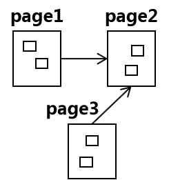
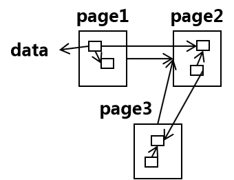

——>本篇是听论坛后我所感兴趣的总结，具体的技术原理没有展示，若想要了解，请参考文末的文档链接
一、知识图谱发展历史

语义网络 —— 1960年提出节点表示概念、对象，边表示节点间关系的语义网络
本体 —— 1980年本体别提出，本体即概念、实体最高层的抽象
万维网 —— 1989年提出万维网，即超文本链接，是指网页之间的链接，其中最小的粒度是网页page

语义网 —— 1998年语义网被提出，语义网是让机器能够理解数据，是指网页中数据、资源之间的链接，其中最小粒度是数据data/thing

链接数据 —— 2006年提出链接数据，即在不同数据集中创建链接
知识图谱 —— 2012年谷歌应用知识图谱明显提高了搜索引擎的质量
二、知识图谱应用场景
1. 网络行为动态分析
1. 舆情监测
2. 热点追踪
3. 用户情感倾向分析 - 网络暴力、键盘侠
4. 社交网络影响力分析 - 明星品牌代言
2. 智能QA
1. 人机交互 - 天猫精灵
3. 智能推荐
1. 用户兴趣追踪
2. 产品关联发掘
3. 动态场景分析
三、知识图谱机遇挑战
| 机遇挑战 | 描述 |
|---|---|
| 嫁接语言表达(Vocabulary Gap) | 词汇知识(同义词、上下位词、反义词、缩略词)嫁接，例如司机和乘客对同一件事的说法，尤其司法的一意多表现象 |
| 补全缺失的因果链条 | 大多是业务结果数据，缺少产生这些数据的背景因果,典型例子是爸爸买尿布会同时买啤酒的因果 |
| 碎片化数据的关联和融合 | 实现碎片数据的自主、普适融合 |
| 农业、工业、服务业的应用 | 大多应用到服务业，农业和工业还没有广泛应用 |
| 与其他知识表示的协同表示于推理 | 大规模知识图谱与逻辑规则、概率图模型、隐变量结合;开放世界假设下的推理 |
| 常识知识的多模态数据获取和表示 | 常识匮乏的根本原因在于常识隐性蕴含于多模态数据中;知识的多模态表示 |
| 知识图谱应用透明化 | 无需用户了解知识图谱技术而直接应用，直接学习构建schema |
| 文档级的信息抽取和自动生成 | 从句子级别抽取到篇章级别抽取，例如说明书;司法领域的裁判文书的自动生成 |
文档链接 提取码：tdm5
THINK——2019.10.20 北理工知识图谱前沿技术论坛
这次去论坛让我受益颇多，但是最让我印象深刻不是知识图谱中前沿技术和发展，也不是惊叹于各界的大佬，而是一个现象和一位老师。北理工的一位老师（也是这次举办论坛的老师）谈论到北理工的图书馆有40多位老师，其中有3/4的老师是博士（更多地是惊叹于此），他们的工作就是上班整理整理书籍、刷刷手机，当然这已是常态没有惊奇的，还有一些则是接送孩子。这位老师在此走出图书馆，迈进了计算机学院，不过最后仍会走进图书馆，用知识图谱的技术、从平台化实践到中台化思考为图书馆提供知识服务，彻底颠覆图书馆（我很喜欢这句话），因为图书馆本身就是提供知识的思考地。（对应了计算智能到感知智能再到认知智能）我对北京的印象，其实很早就想写了，只不过没有什么契机。北京是一个适合做梦的地方，不论是多夸张的梦、多滑稽的梦、多无聊的梦，因为它的包容性很强，不是有句话说海乃百川，有容乃大吗！北京是一个开放交流的地方，它让形形色色的人、事、物得于很好地交流和发展，有似中心一样聚集着大家。北京也是一个无可奈何的地方，你对它无可奈何，它对你有时也无可奈何，双方僵持着，僵持着，最终大多都是你妥协了，妥协其实也不对，是成长了。